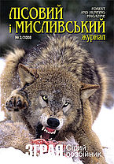

«ЛІСОВИЙ І МИСЛИВСЬКИЙ ЖУРНАЛ»
«ЛІСОВИЙ І МИСЛИВСЬКИЙ ЖУРНАЛ» - єдине спеціалізоване видання в Україні На сторінках журналу друкується ексклюзивна інформація від професіоналів лісової, деревообробної та мисливської галузі:
- Вирощування, захист, охорона лісу;
- Переробка деревини;
- Верстати і обладнання, сушильні камери;
- Досвід ведення лісового і мисливського господарства;
- Способи і методи полювання та риболовлі;
- Зброя: фірми і моделі;
- Кінологія тощо.
ГАЗЕТА «Природа і суспільство»
Переходимо на сайт
ГАЗЕТА «Природа і суспільство» - всеукраїнська екологічна газета, науково-популярне періодичне видання,
яке розкриває тематики екології та енергоефективності, зміни клімату та природокористування.
Видання високого наукового рівня, забезпечує доступність складних проблем науки про природу та клімат Землі,
розповідає про розвиток зеленої економіки та енергетики.
Значне місце приділяється питанням екологічної освіти.
Серед читачів газети — люди різних професій, школярі та студенти.
Значна увага у газеті приділена стану природних заповідників і заказників, а також таких життєво-важливих показників середовища
мешкання людини, як їжа, вода і повітря.
Особлива увага також приділяється екологічній освіті і вихованню.
ТОВ «РЕДАКЦІЯ ГАЗЕТИ «ДЕРЕВООБРОБНИК»
Газета «Деревообробник» із 2000 року є основним джерелом інформації про стан деревообробної, лісової та меблевої галузі в Україні,
нові технології та обладнання.
За цей час вона стала вірним порадником для тисяч меблевиків,
деревообробників та лісівників.
Колектив газети «Деревообробник» докладає максимум зусиль, щоб весь унікальний досвід,
знання ринку та компетенції, накопичені виданням за 17 років існування, працював на читачів.
Це дає газеті змогу бути лідером українського інформаційного та рекламного простору для деревообробників, лісівників і виробників меблів.
- дуб
- береза
- ясен
- липа
- берест
Як наслідок – зростаюча зацікавленість тисяч спеціалістів–читачів до матеріалів, які розміщує видання щомісяця, багаторічна
співпраця з розміщення інформації провідних виробників та дилерів як українського, так і закордонного обладнання, участь у виставках по всій Європі.